Examples gallery
Every built-in effect (61 in total) has an example scene, shown here as the terminal draws it (ANSI half-blocks on an 80×24 grid) and at full resolution. Option tables for each effect are in EFFECTS.md.
Play any example in the terminal with pnpm run overscan -- run <scene>, or open it in the studio with pnpm run overscan -- dev <scene>.
Contents
- Showcase demo
- Generators (32): checkerboard-floor, copperbars, dot-matrix, dot-tunnel, fire, fractal-zoom, game-of-life, glenz, image, kefrens, lasers, lissajous, matrix-rain, metaballs, moire, oscilloscope, particles, plasma, polygon, raymarcher, rotozoom, scroller, shadebobs, sinebobs, starfield, text, tunnel, twister, vector-balls, voxel-landscape, water-ripple, wireframe
- Modifiers (19): ansi-art, blur, blur-glow, bump, chromatic-aberration, color-grade, crt, dither, emboss, feedback, glow, lens, mirror, palette-cycle, palette-flash, pixelate, radial-blur, uv-map, wobble
- Compositors (7): additive-blend, alpha-blend, difference-blend, multiply-blend, overlay-blend, screen-blend, transition
- Signals (3): audio-analyser, lfo, noise
- Advanced compositions (17)
Showcase demo
examples/showcase.demo.json: Overscan: pixels bleeding beyond the edge, 12 sections cut to a synthesised soundtrack (./showcase/music.mp3, built by scripts/build-showcase-music.mjs). Play it with pnpm run overscan -- run examples/showcase.demo.json (audio needs mpv) or open it in the studio.
| # | Section | Effects | Into the next |
|---|---|---|---|
| 1 | lock | image, wobble, chromatic-aberration, additive-blend |
— |
| 2 | bleed | image, additive-blend, radial-blur, feedback, color-grade |
flash 0.25 s |
| 3 | grid | checkerboard-floor, polygon, alpha-blend, chromatic-aberration |
push 0.35 s |
| 4 | walls | kefrens, palette-flash |
checker 0.45 s |
| 5 | flower | plasma, uv-map |
blinds 0.45 s |
| 6 | jelly | copperbars, polygon, alpha-blend, dither |
melt 0.9 s |
| 7 | planet | starfield, plasma, uv-map, alpha-blend, scroller, radial-blur |
flash 0.25 s |
| 8 | hyperspace | dot-tunnel, radial-blur |
zoom-out 0.5 s |
| 9 | monument | raymarcher, color-grade, radial-blur |
push 0.35 s |
| 10 | burn | image, fire, additive-blend, particles, wobble |
checker 0.4 s |
| 11 | finale | plasma, uv-map, polygon, particles, additive-blend, feedback, alpha-blend |
melt 1 s |
| 12 | afterglow | particles, image, alpha-blend, additive-blend, palette-flash |
— |
Demo-wide modifiers: crt.
Generators
Draw an image from nothing.
Checkerboard Floor (checkerboard-floor)
Flat checkerboard plane in true perspective below a horizon, with scrolling, camera yaw and distance fog.
| Terminal (ANSI, 80×24) | Full resolution |
|---|---|
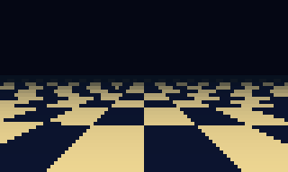 |
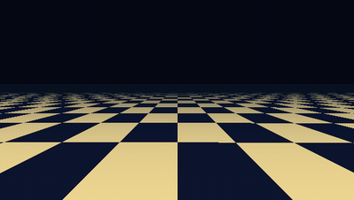 |
examples/generators/checkerboard-floor.scene.json · pnpm run overscan -- run examples/generators/checkerboard-floor.scene.json · options
Copper Bars (copperbars)
Amiga-style horizontal copper bars, each shaded dark to bright to dark, swinging on sine paths with near bars drawn over far ones.
| Terminal (ANSI, 80×24) | Full resolution |
|---|---|
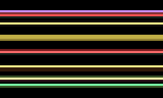 |
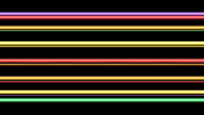 |
examples/generators/copperbars.scene.json · pnpm run overscan -- run examples/generators/copperbars.scene.json · options
DYCP Scroller
| Terminal (ANSI, 80×24) | Full resolution |
|---|---|
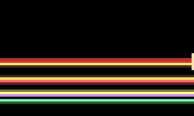 |
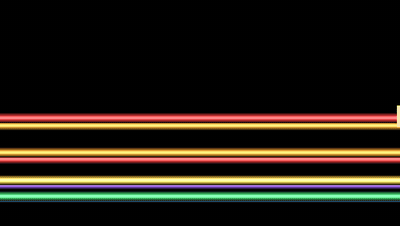 |
examples/generators/dycp-scroller.scene.json · pnpm run overscan -- run examples/generators/dycp-scroller.scene.json
Dot Matrix (dot-matrix)
A rotating 3D point cloud (sphere, torus, helix, cube or text) drawn as glowing dots, with optional morphing between two shapes.
| Terminal (ANSI, 80×24) | Full resolution |
|---|---|
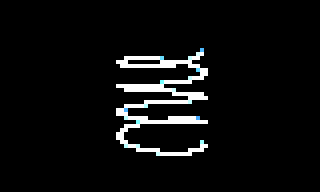 |
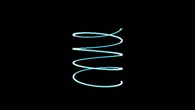 |
examples/generators/dot-matrix.scene.json · pnpm run overscan -- run examples/generators/dot-matrix.scene.json · options
Dot Tunnel (dot-tunnel)
Rings of dots rushing towards the viewer along a curving path; with flower above 0 the rings bulge into a dot flower.
| Terminal (ANSI, 80×24) | Full resolution |
|---|---|
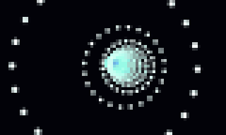 |
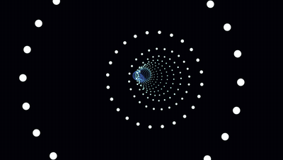 |
examples/generators/dot-tunnel.scene.json · pnpm run overscan -- run examples/generators/dot-tunnel.scene.json · options
Dot Flower
| Terminal (ANSI, 80×24) | Full resolution |
|---|---|
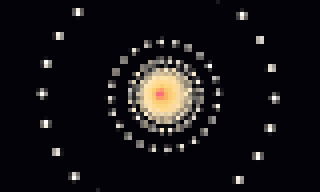 |
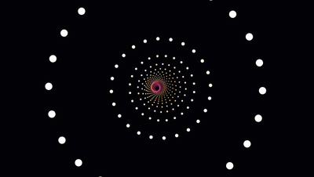 |
examples/generators/dot-flower.scene.json · pnpm run overscan -- run examples/generators/dot-flower.scene.json
Fire (fire)
Classic demoscene fire: heat is seeded along the bottom row, rises, spreads and cools, and is mapped through a palette.
| Terminal (ANSI, 80×24) | Full resolution |
|---|---|
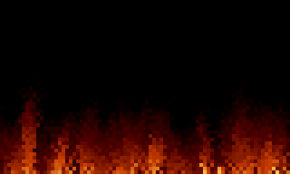 |
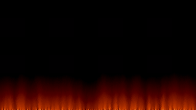 |
examples/generators/fire.scene.json · pnpm run overscan -- run examples/generators/fire.scene.json · options
Fractal Zoom (fractal-zoom)
Mandelbrot or Julia set rendered with a cycling palette, with continuous exponential zoom.
| Terminal (ANSI, 80×24) | Full resolution |
|---|---|
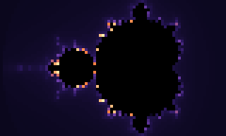 |
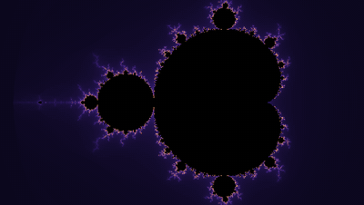 |
examples/generators/fractal-zoom.scene.json · pnpm run overscan -- run examples/generators/fractal-zoom.scene.json · options
Game of Life (game-of-life)
Conway's Game of Life on a cell grid, coloured as plain on/off, by cell age, or through an age palette.
| Terminal (ANSI, 80×24) | Full resolution |
|---|---|
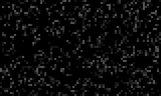 |
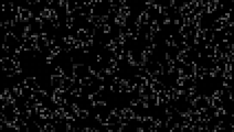 |
examples/generators/game-of-life.scene.json · pnpm run overscan -- run examples/generators/game-of-life.scene.json · options
Glenz Vectors (glenz)
Translucent faceted glenz object (a cube with a pyramid on each face) whose back faces show through the front ones.
| Terminal (ANSI, 80×24) | Full resolution |
|---|---|
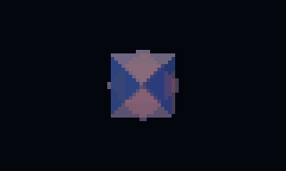 |
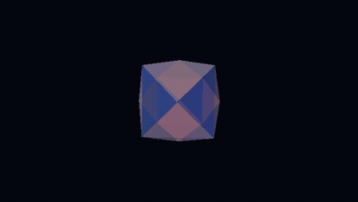 |
examples/generators/glenz.scene.json · pnpm run overscan -- run examples/generators/glenz.scene.json · options
Image / Logo (image)
Shows a picture, or a gradient-filled text logo in a bitmap font, scaled and placed anywhere; transparent around it.
| Terminal (ANSI, 80×24) | Full resolution |
|---|---|
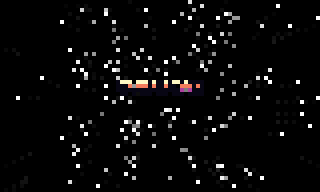 |
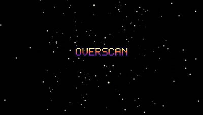 |
examples/generators/image.scene.json · pnpm run overscan -- run examples/generators/image.scene.json · options
Kefrens Bars (kefrens)
One shaded bar drawn on every scanline into a line that is never cleared, so its swing piles up into twisting walls.
| Terminal (ANSI, 80×24) | Full resolution |
|---|---|
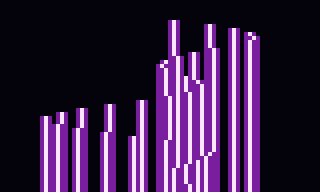 |
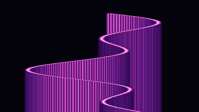 |
examples/generators/kefrens.scene.json · pnpm run overscan -- run examples/generators/kefrens.scene.json · options
Lasers (lasers)
Club-style laser show: fans of glowing beams sweep and rotate from emitters along the bottom, pulsing with the audio.
| Terminal (ANSI, 80×24) | Full resolution |
|---|---|
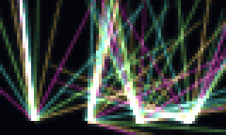 |
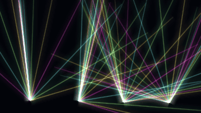 |
examples/generators/lasers.scene.json · pnpm run overscan -- run examples/generators/lasers.scene.json · options
Lissajous (lissajous)
An oscilloscope-style Lissajous curve traced as a glowing line with a fading phosphor trail.
| Terminal (ANSI, 80×24) | Full resolution |
|---|---|
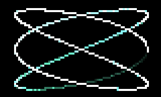 |
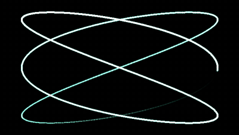 |
examples/generators/lissajous.scene.json · pnpm run overscan -- run examples/generators/lissajous.scene.json · options
Matrix Rain (matrix-rain)
Falling columns of glyphs with bright heads and fading trails, in the style of The Matrix.
| Terminal (ANSI, 80×24) | Full resolution |
|---|---|
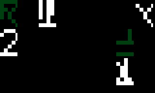 |
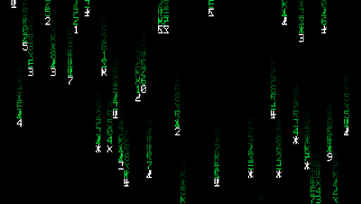 |
examples/generators/matrix-rain.scene.json · pnpm run overscan -- run examples/generators/matrix-rain.scene.json · options
Metaballs (metaballs)
Blobby metaballs moving on sine paths that merge where their fields overlap, coloured through a palette.
| Terminal (ANSI, 80×24) | Full resolution |
|---|---|
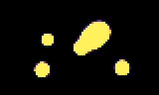 |
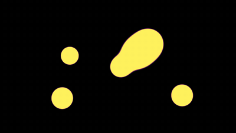 |
examples/generators/metaballs.scene.json · pnpm run overscan -- run examples/generators/metaballs.scene.json · options
Moiré (moire)
Two overlapping line, ring or radial patterns whose interference makes shifting moiré fringes.
| Terminal (ANSI, 80×24) | Full resolution |
|---|---|
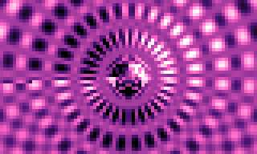 |
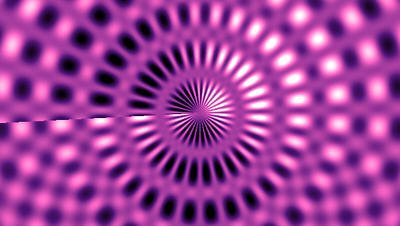 |
examples/generators/moire.scene.json · pnpm run overscan -- run examples/generators/moire.scene.json · options
Oscilloscope (oscilloscope)
A glowing oscilloscope trace of a synthetic waveform over a graticule, with optional phosphor persistence.
| Terminal (ANSI, 80×24) | Full resolution |
|---|---|
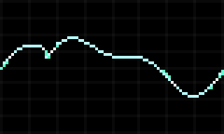 |
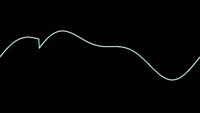 |
examples/generators/oscilloscope.scene.json · pnpm run overscan -- run examples/generators/oscilloscope.scene.json · options
Particles (particles)
Particle systems computed from time alone (exact when seeking): fountain, explosions, vortex, or a strange-attractor cloud.
| Terminal (ANSI, 80×24) | Full resolution |
|---|---|
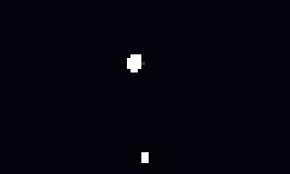 |
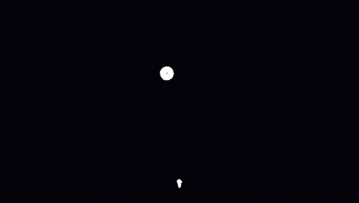 |
examples/generators/particles.scene.json · pnpm run overscan -- run examples/generators/particles.scene.json · options
Strange Attractor
| Terminal (ANSI, 80×24) | Full resolution |
|---|---|
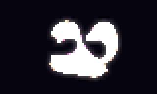 |
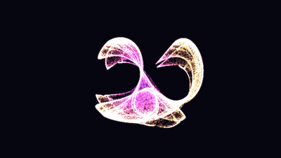 |
examples/generators/strange-attractor.scene.json · pnpm run overscan -- run examples/generators/strange-attractor.scene.json
Plasma (plasma)
Classic sum-of-sines plasma mapped through a cycling colour palette.
| Terminal (ANSI, 80×24) | Full resolution |
|---|---|
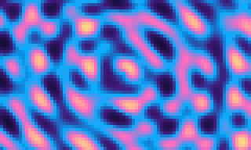 |
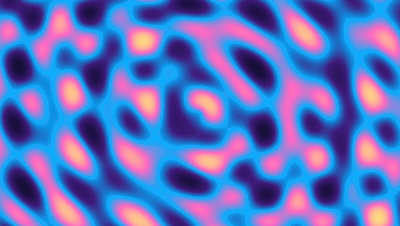 |
examples/generators/plasma.scene.json · pnpm run overscan -- run examples/generators/plasma.scene.json · options
Polygon Object (polygon)
Solid 3D objects with a depth buffer: flat, Gouraud or chrome (environment-mapped) shading, and an optional rubber (jelly) wobble.
| Terminal (ANSI, 80×24) | Full resolution |
|---|---|
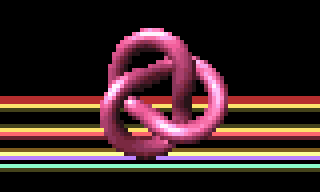 |
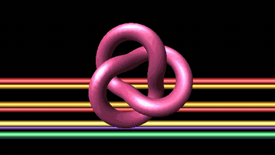 |
examples/generators/polygon.scene.json · pnpm run overscan -- run examples/generators/polygon.scene.json · options
Environment-mapped torus
| Terminal (ANSI, 80×24) | Full resolution |
|---|---|
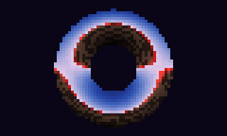 |
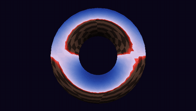 |
examples/generators/chrome-torus.scene.json · pnpm run overscan -- run examples/generators/chrome-torus.scene.json
Rubber Vector
| Terminal (ANSI, 80×24) | Full resolution |
|---|---|
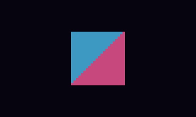 |
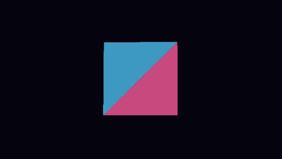 |
examples/generators/rubber-vector.scene.json · pnpm run overscan -- run examples/generators/rubber-vector.scene.json
Raymarcher (raymarcher)
Sphere-traces a signed-distance scene written in GLSL, lit by a single directional light with distance fog.
| Terminal (ANSI, 80×24) | Full resolution |
|---|---|
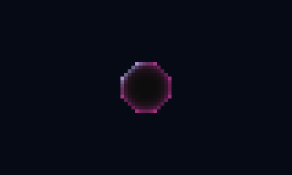 |
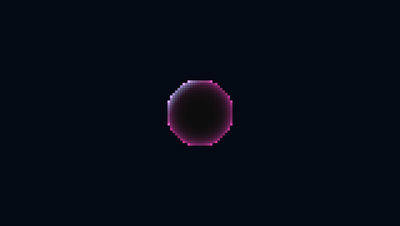 |
examples/generators/raymarcher.scene.json · pnpm run overscan -- run examples/generators/raymarcher.scene.json · options
Raymarcher Monument
| Terminal (ANSI, 80×24) | Full resolution |
|---|---|
examples/generators/raymarcher-monument.scene.json · pnpm run overscan -- run examples/generators/raymarcher-monument.scene.json
Rotozoom (rotozoom)
A tiled texture rotated and zoomed around a centre point, the classic rotozoomer.
| Terminal (ANSI, 80×24) | Full resolution |
|---|---|
examples/generators/rotozoom.scene.json · pnpm run overscan -- run examples/generators/rotozoom.scene.json · options
Scroller (scroller)
A bitmap-font text line scrolling across the screen on a sine wave, in per-column or per-character (DYCP) style.
| Terminal (ANSI, 80×24) | Full resolution |
|---|---|
examples/generators/scroller.scene.json · pnpm run overscan -- run examples/generators/scroller.scene.json · options
Shadebobs (shadebobs)
Flat bobs stamped along Lissajous paths that add to a wrapping colour index, building contour bands.
| Terminal (ANSI, 80×24) | Full resolution |
|---|---|
examples/generators/shadebobs.scene.json · pnpm run overscan -- run examples/generators/shadebobs.scene.json · options
Sinebobs (sinebobs)
Glowing sprites following a chain of Lissajous paths, with optional motion trails.
| Terminal (ANSI, 80×24) | Full resolution |
|---|---|
examples/generators/sinebobs.scene.json · pnpm run overscan -- run examples/generators/sinebobs.scene.json · options
Starfield (starfield)
Stars flying out from a vanishing point, growing as they approach.
| Terminal (ANSI, 80×24) | Full resolution |
|---|---|
examples/generators/starfield.scene.json · pnpm run overscan -- run examples/generators/starfield.scene.json · options
Text (text)
Static bitmap-font text, single or multi-line, placed anywhere on screen.
| Terminal (ANSI, 80×24) | Full resolution |
|---|---|
examples/generators/text.scene.json · pnpm run overscan -- run examples/generators/text.scene.json · options
Tunnel (tunnel)
A textured tunnel flown through by mapping screen angle and depth onto a texture.
| Terminal (ANSI, 80×24) | Full resolution |
|---|---|
examples/generators/tunnel.scene.json · pnpm run overscan -- run examples/generators/tunnel.scene.json · options
Twister (twister)
Classic twister bar: a square column whose rotation varies down the screen, with shaded faces.
| Terminal (ANSI, 80×24) | Full resolution |
|---|---|
examples/generators/twister.scene.json · pnpm run overscan -- run examples/generators/twister.scene.json · options
Vector Balls (vector-balls)
Shaded balls on the vertices and edges of a rotating 3D object that morphs between shapes.
| Terminal (ANSI, 80×24) | Full resolution |
|---|---|
examples/generators/vector-balls.scene.json · pnpm run overscan -- run examples/generators/vector-balls.scene.json · options
Voxel Landscape (voxel-landscape)
Comanche-style voxel terrain flown over, from a heightmap image or procedural noise.
| Terminal (ANSI, 80×24) | Full resolution |
|---|---|
examples/generators/voxel-landscape.scene.json · pnpm run overscan -- run examples/generators/voxel-landscape.scene.json · options
Water Ripple (water-ripple)
A height-field water simulation whose ripples refract a texture or pool-tile pattern.
| Terminal (ANSI, 80×24) | Full resolution |
|---|---|
examples/generators/water-ripple.scene.json · pnpm run overscan -- run examples/generators/water-ripple.scene.json · options
Wireframe (wireframe)
A rotating wireframe cube drawn with perspective lines.
| Terminal (ANSI, 80×24) | Full resolution |
|---|---|
examples/generators/wireframe.scene.json · pnpm run overscan -- run examples/generators/wireframe.scene.json · options
Modifiers
Change the image fed into them.
ANSI Art (ansi-art)
Redraws the input as a grid of text-mode cells (blocks, ASCII glyphs or braille dots) coloured by the average of each cell.
| Terminal (ANSI, 80×24) | Full resolution |
|---|---|
examples/modifiers/ansi-art.scene.json · pnpm run overscan -- run examples/modifiers/ansi-art.scene.json · options
Blur (blur)
Box blur of the input; a preset of Blur / Glow in blur mode.
| Terminal (ANSI, 80×24) | Full resolution |
|---|---|
examples/modifiers/blur.scene.json · pnpm run overscan -- run examples/modifiers/blur.scene.json · options
Blur / Glow (blur-glow)
Box blur that either replaces the input (blur) or is added back on top of it (glow).
| Terminal (ANSI, 80×24) | Full resolution |
|---|---|
examples/modifiers/blur-glow.scene.json · pnpm run overscan -- run examples/modifiers/blur-glow.scene.json · options
Bump Map (bump)
Treats the input’s brightness as a height map (a logo works well) and lights it with a moving point light.
| Terminal (ANSI, 80×24) | Full resolution |
|---|---|
examples/modifiers/bump.scene.json · pnpm run overscan -- run examples/modifiers/bump.scene.json · options
Chromatic Aberration (chromatic-aberration)
Shifts the red and blue channels in opposite directions to fake lens colour fringing.
| Terminal (ANSI, 80×24) | Full resolution |
|---|---|
examples/modifiers/chromatic-aberration.scene.json · pnpm run overscan -- run examples/modifiers/chromatic-aberration.scene.json · options
Color Grade (color-grade)
Remaps the input through a luminance gradient palette or per-channel curves, blended with the original.
| Terminal (ANSI, 80×24) | Full resolution |
|---|---|
examples/modifiers/color-grade.scene.json · pnpm run overscan -- run examples/modifiers/color-grade.scene.json · options
CRT (crt)
Cathode-ray tube look: scanlines, barrel distortion, vignette, phosphor glow and an optional RGB shadow mask.
| Terminal (ANSI, 80×24) | Full resolution |
|---|---|
examples/modifiers/crt.scene.json · pnpm run overscan -- run examples/modifiers/crt.scene.json · options
Dither (dither)
Ordered (Bayer) dithering to a fixed palette (C64, CGA, EGA, Game Boy, PICO-8…) or a few levels per channel.
| Terminal (ANSI, 80×24) | Full resolution |
|---|---|
examples/modifiers/dither.scene.json · pnpm run overscan -- run examples/modifiers/dither.scene.json · options
Emboss (emboss)
Relief shading from the brightness difference along a light direction, in grey or tinted by the original colour.
| Terminal (ANSI, 80×24) | Full resolution |
|---|---|
examples/modifiers/emboss.scene.json · pnpm run overscan -- run examples/modifiers/emboss.scene.json · options
Feedback (feedback)
Blends each frame with a shifted, scaled copy of the previous output to leave trails and tunnels.
| Terminal (ANSI, 80×24) | Full resolution |
|---|---|
examples/modifiers/feedback.scene.json · pnpm run overscan -- run examples/modifiers/feedback.scene.json · options
Glow (glow)
Adds a blurred copy of the input on top of itself; a preset of Blur / Glow in glow mode.
| Terminal (ANSI, 80×24) | Full resolution |
|---|---|
examples/modifiers/glow.scene.json · pnpm run overscan -- run examples/modifiers/glow.scene.json · options
Lens (lens)
Magnifying-glass bulge inside a circular area, with optional colour fringing.
| Terminal (ANSI, 80×24) | Full resolution |
|---|---|
examples/modifiers/lens.scene.json · pnpm run overscan -- run examples/modifiers/lens.scene.json · options
Mirror (mirror)
Reflects the image around an origin point, horizontally, vertically, into four quadrants or eight kaleidoscope slices.
| Terminal (ANSI, 80×24) | Full resolution |
|---|---|
examples/modifiers/mirror.scene.json · pnpm run overscan -- run examples/modifiers/mirror.scene.json · options
Palette Cycle (palette-cycle)
Maps pixel brightness through a palette whose offset rotates over time, like classic colour cycling.
| Terminal (ANSI, 80×24) | Full resolution |
|---|---|
examples/modifiers/palette-cycle.scene.json · pnpm run overscan -- run examples/modifiers/palette-cycle.scene.json · options
Palette Flash (palette-flash)
Flashes the image towards a solid colour, typically driven by a beat or track.
| Terminal (ANSI, 80×24) | Full resolution |
|---|---|
examples/modifiers/palette-flash.scene.json · pnpm run overscan -- run examples/modifiers/palette-flash.scene.json · options
Pixelate (pixelate)
Reduces the image to large blocks, drawn as squares, circles or diamonds.
| Terminal (ANSI, 80×24) | Full resolution |
|---|---|
examples/modifiers/pixelate.scene.json · pnpm run overscan -- run examples/modifiers/pixelate.scene.json · options
Radial Blur (radial-blur)
Zoom streaks out from a centre point; in rays mode only bright parts streak, added on top as light rays.
| Terminal (ANSI, 80×24) | Full resolution |
|---|---|
examples/modifiers/radial-blur.scene.json · pnpm run overscan -- run examples/modifiers/radial-blur.scene.json · options
UV Map (uv-map)
Maps the input onto a tunnel, flower tunnel or sphere, or twirls it around the centre, by per-pixel texture coordinates.
| Terminal (ANSI, 80×24) | Full resolution |
|---|---|
examples/modifiers/uv-map.scene.json · pnpm run overscan -- run examples/modifiers/uv-map.scene.json · options
Sphere mapping
| Terminal (ANSI, 80×24) | Full resolution |
|---|---|
examples/modifiers/sphere-mapping.scene.json · pnpm run overscan -- run examples/modifiers/sphere-mapping.scene.json
Twirl
| Terminal (ANSI, 80×24) | Full resolution |
|---|---|
examples/modifiers/twirl.scene.json · pnpm run overscan -- run examples/modifiers/twirl.scene.json
Wobble (wobble)
Raster wobble: shifts each scanline (or column) of the input by a sine, the classic wobbling logo.
| Terminal (ANSI, 80×24) | Full resolution |
|---|---|
examples/modifiers/wobble.scene.json · pnpm run overscan -- run examples/modifiers/wobble.scene.json · options
Compositors
Combine two or more images.
Additive Blend (additive-blend)
Adds the overlay onto the base, optionally masked by the luminance of a mask input.
| Terminal (ANSI, 80×24) | Full resolution |
|---|---|
examples/compositors/additive-blend.scene.json · pnpm run overscan -- run examples/compositors/additive-blend.scene.json · options
Alpha Blend (alpha-blend)
Standard "over" compositing of the overlay onto the base using its alpha, optionally masked.
| Terminal (ANSI, 80×24) | Full resolution |
|---|---|
examples/compositors/alpha-blend.scene.json · pnpm run overscan -- run examples/compositors/alpha-blend.scene.json · options
Difference Blend (difference-blend)
Absolute difference of base and overlay, optionally masked.
| Terminal (ANSI, 80×24) | Full resolution |
|---|---|
examples/compositors/difference-blend.scene.json · pnpm run overscan -- run examples/compositors/difference-blend.scene.json · options
Multiply Blend (multiply-blend)
Multiplies base by overlay, darkening it, optionally masked.
| Terminal (ANSI, 80×24) | Full resolution |
|---|---|
examples/compositors/multiply-blend.scene.json · pnpm run overscan -- run examples/compositors/multiply-blend.scene.json · options
Overlay Blend (overlay-blend)
Overlay blend: multiplies the base darks and screens its lights with the overlay, optionally masked.
| Terminal (ANSI, 80×24) | Full resolution |
|---|---|
examples/compositors/overlay-blend.scene.json · pnpm run overscan -- run examples/compositors/overlay-blend.scene.json · options
Screen Blend (screen-blend)
Screen blend that brightens the base with the overlay, optionally masked.
| Terminal (ANSI, 80×24) | Full resolution |
|---|---|
examples/compositors/screen-blend.scene.json · pnpm run overscan -- run examples/compositors/screen-blend.scene.json · options
Transition (transition)
Transitions from base to overlay with a dissolve, wipe, zoom, iris or flash, driven by a progress value.
| Terminal (ANSI, 80×24) | Full resolution |
|---|---|
examples/compositors/transition.scene.json · pnpm run overscan -- run examples/compositors/transition.scene.json · options
Signals
Produce numbers that drive other nodes’ settings.
Audio Analyser (audio-analyser)
Analyses a WAV file in sync with the timeline and outputs loudness, brightness, beat, zero-crossing, chroma and MFCC-style bands.
| Terminal (ANSI, 80×24) | Full resolution |
|---|---|
examples/signals/audio-analyser.scene.json · pnpm run overscan -- run examples/signals/audio-analyser.scene.json · options
LFO (lfo)
Low-frequency oscillator producing a periodic wave (or stepped random values) plus its phase.
| Terminal (ANSI, 80×24) | Full resolution |
|---|---|
examples/signals/lfo.scene.json · pnpm run overscan -- run examples/signals/lfo.scene.json · options
Noise (noise)
Smoothed random signal that picks a new target value at a fixed rate.
| Terminal (ANSI, 80×24) | Full resolution |
|---|---|
examples/signals/noise.scene.json · pnpm run overscan -- run examples/signals/noise.scene.json · options
Advanced compositions
Several effects wired together; the chain lists each scene’s nodes in graph order.
Blur Glow Stack
Nodes: metaballs · text · screen-blend · blur-glow · glow · crt
| Terminal (ANSI, 80×24) | Full resolution |
|---|---|
examples/advanced/blur-glow-stack.scene.json · pnpm run overscan -- run examples/advanced/blur-glow-stack.scene.json
Cells Matrix Scope
Nodes: game-of-life · matrix-rain · oscilloscope · screen-blend · additive-blend · color-grade · crt
| Terminal (ANSI, 80×24) | Full resolution |
|---|---|
examples/advanced/cells-matrix-scope.scene.json · pnpm run overscan -- run examples/advanced/cells-matrix-scope.scene.json
Copper Sinebobs
Nodes: copperbars · sinebobs · screen-blend
| Terminal (ANSI, 80×24) | Full resolution |
|---|---|
examples/advanced/copper-sinebobs.scene.json · pnpm run overscan -- run examples/advanced/copper-sinebobs.scene.json
Fire Scroller
Nodes: fire · scroller · additive-blend
| Terminal (ANSI, 80×24) | Full resolution |
|---|---|
examples/advanced/fire-scroller.scene.json · pnpm run overscan -- run examples/advanced/fire-scroller.scene.json
Floor Metaballs
Nodes: checkerboard-floor · metaballs · screen-blend · glow · crt
| Terminal (ANSI, 80×24) | Full resolution |
|---|---|
examples/advanced/floor-metaballs.scene.json · pnpm run overscan -- run examples/advanced/floor-metaballs.scene.json
Fractal Floor
Nodes: fractal-zoom · checkerboard-floor · overlay-blend · lens · crt
| Terminal (ANSI, 80×24) | Full resolution |
|---|---|
examples/advanced/fractal-floor.scene.json · pnpm run overscan -- run examples/advanced/fractal-floor.scene.json
Moire Mirror Cycle
Nodes: moire · mirror · palette-cycle
| Terminal (ANSI, 80×24) | Full resolution |
|---|---|
examples/advanced/moire-mirror-cycle.scene.json · pnpm run overscan -- run examples/advanced/moire-mirror-cycle.scene.json
Neon Layers
Nodes: plasma · tunnel · lasers · screen-blend · additive-blend · chromatic-aberration · glow · crt
| Terminal (ANSI, 80×24) | Full resolution |
|---|---|
examples/advanced/neon-layers.scene.json · pnpm run overscan -- run examples/advanced/neon-layers.scene.json
Plasma under a lens
Nodes: plasma · lens
| Terminal (ANSI, 80×24) | Full resolution |
|---|---|
examples/advanced/plasma-lens.scene.json · pnpm run overscan -- run examples/advanced/plasma-lens.scene.json
Raymarcher Metaballs
Nodes: raymarcher · metaballs · screen-blend · color-grade
| Terminal (ANSI, 80×24) | Full resolution |
|---|---|
examples/advanced/raymarcher-metaballs.scene.json · pnpm run overscan -- run examples/advanced/raymarcher-metaballs.scene.json
Scroller ASCII
Nodes: starfield · scro